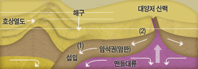
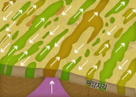
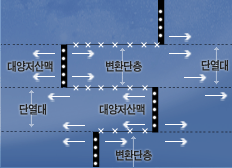

생성원리

해저 확장설
1960년 초 다이츠와 헤츠는 심해 해령에서 맨틀물질이 올라오는 것을 발견하면서 해저확장설을 주장하게 됩니다. 해령 중심에서 옆으로 퍼져 이동하면서 새로운 해양지각이 생성되고 판경계부인 해구에 도달하면 지하로 침강하여 소멸된다는 내용입니다. 맨틀물질이 상승하고 해령을 중심으로 해양지각이 이동하는 힘의 근원을 맨틀대류로 보았으며, 대륙지각은 해양지각 위에 얹혀 함께 이동한다고 주장하였습니다. 해저확장설은 다음과 같은 여러가지 증거들을 제시하였습니다.
- 
그림 5. 해저확장과 맨틀 대류
(1) 해구 부근 : 해양지각이 호상열도 밑으로 들어가는 곳
(2) 대양저 산맥 부근 : 상승된 맨틀물질의 냉각으로
해양지각 이생성되는 곳 - 01 해양지각의 나이
해양지각의 나이를 조사해보면 해령으로부터 멀어짐에 따라 그 나이가 점점 오래되었음을 알 수 있습니다. 이것은 해령에서 새로운 해양지각이 생겨나서 양쪽으로 퍼져 이동해 간다는 증거가 됩니다.
- 
그림 9. 해령을 축으로 대양지각에 고정된
고지자기 극이 반전된 모양
지질학개론(정창희,‘06) - 02 해저에 나타난 지구 고자기 줄무늬의 대칭
지구 자기 역전의 줄무늬가 해령을 축으로 대칭구조가 나타나는 사실은 자기의 역전된 시기를 고려해 볼 때, 해령을 중심으로 해양지각이 양쪽으로 서서히 확장되어 이동함을 보여줍니다. 해령에서 맨틀 물질이 상승하여 새로운 해양지각을 형성할 때 그 당시의 지구 자기장의 방향을 간직한다는 사실을 근거로 역전 줄무늬를 그림과 같이 표현할 수 있고 지각의 연대를 함께 측정하게 되면 해양지각의 확장속도 또한 분석이 가능해집니다. 이러한 지구자기줄무늬의 자료를 해석해보면 확장속도는 1년에 약 1~10cm씩 이동합니다.
- 
그림 10. 대양저산맥과 변환단층
● : 지진과 화산 활동이 있는 곳
x : 천발지진의 진앙들 - 03 변환단층
해령을 여러토막으로 자르고 있는 변환단층도 해저확장설의 증거입니다. 해령을 어긋나게 만드는 변환단층이 나타나는 이유는 해령으로부터 밀려 올라온 지구내부물질이 속도의 차이를 내며 양쪽으로 이동, 확장되기 때문입니다. 또한 해령이 잘려진 변환단층 주위에 천발지진이 발생하는 것도 해양지각의 이동방향이 반대방향으로 진행되기 때문에 생기는 충돌로 해석되므로 해저확장의 증거가 됩니다.